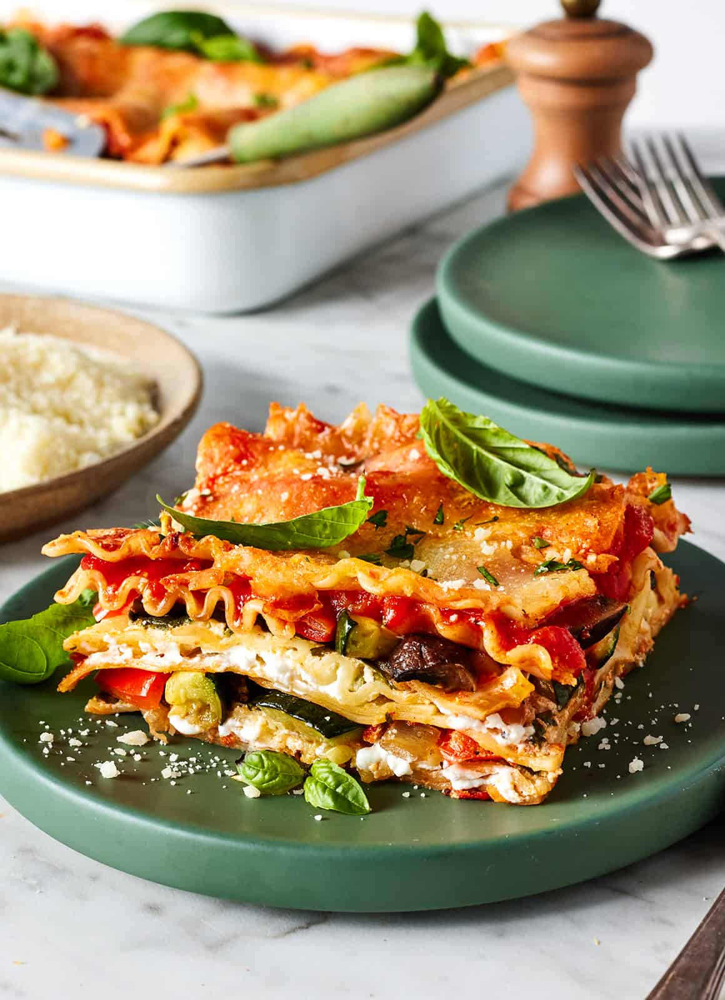

Cheese Lasagna

Vegetarian Cheese Lasagne with vegetables
Ingredients
- Fresh veggies
- Lasagna noodles
- Marinara sauce
- Ricotta cheese
- Shredded pecorino and mozzarella cheese
- And fresh basil and/or parsley
Before you assemble the lasagna, complete these 3 prep steps:
- Roast the veggies. Toss the peppers, zucchini, onions, and mushrooms with olive oil, salt, and pepper. Bake at 425°F until they’re tender and caramelized.
- Boil the noodles until al dente. Toss them with a drizzle of olive oil to prevent sticking!
- Make the ricotta filling. Mix the ricotta cheese with the lemon zest, garlic, salt, and pepper.
You're ready to layer!
How to Layer Vegetable Lasagna
Start with a 9×13-inch baking dish. Spread 1 cup of the tomato sauce on the bottom.
- Then, add a layer of noodles.
- Top of noodles with half the ricotta mixture.
- Layer half the spinach over the ricotta, and scatter half the roasted vegetables in an even layer.
- Dot the vegetables with 2/3 cup of the marinara sauce.
Repeat the layering process in the same order:
- Noodles
- Ricotta
- Spinach + roasted veggies
- 2/3 cup marinara sauce
Top with a final layer of noodles, the remaining sauce, and the shredded cheese.
That's it!
How Long to Bake Vegetarian Lasagna
If using fully cooked lasagna noodles: Bake uncovered at 400F for 30 minutes, or until the cheese is browned and bubbling.
If using no-boil lasagna noodles: Cover the veggie lasagna with aluminum foil. Bake at 400F for 40 to 50 minutes, or until the noodles are tender. Remove the foil and bake until the cheese is browned and bubbling.
Let the vegetable lasagna stand at room temperature for 20 minutes before slicing and serving.